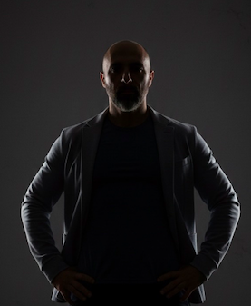

Adaptabilité • Management • Vision Digitale

Père de trois enfants et caméléon stratégique doté d'une forte agilité opérationnelle, mon parcours s'articule autour de la gestion de l'incertitude et de la transformation. Du commerce de terrain à la direction d'écosystèmes numériques, je structure les données et les organisations pour bâtir des stratégies durables et future-proof.
Mon crédo repose sur la capacité à faire le lien entre l'expérience terrain et les infrastructures digitales complexes, tout en garantissant une rigueur absolue face aux évolutions réglementaires et aux enjeux de protection des données.
Développement de la résilience, de la rigueur et de l'éthique de travail à travers mes premières expériences de terrain.
Gestion opérationnelle de commerces de proximité et immersion dans le secteur bancaire. Consolidation des compétences managériales, de la rigueur financière et du pilotage de la conformité réglementaire.
Présidence d'une SAS technologique. Spécialisation dans la transition numérique, l'intégration de solutions SaaS, l'automatisation des processus métiers et la structuration des données financières.
Paris Dauphine
Développement du leadership stratégique, du management avancé et du pilotage de la performance des organisations.
Distinction Militaire
Témoignage de l'engagement, de la rigueur opérationnelle et des services particulièrement honorables rendus.
Data Protection Officer
Expertise en conformité RGPD, gouvernance des données personnelles et gestion des risques numériques.
Intermédiaire en Assurance
Niveau de qualification le plus élevé permettant la gestion et le conseil de solutions réglementées complexes.
Interventions régulières et mobilité sur plusieurs axes européens : France, Espagne, Italie, Suisse, Allemagne.
Un projet ou une opportunité ? Échangeons ensemble.